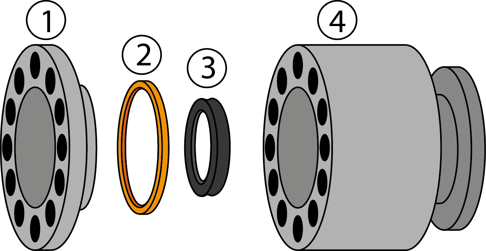
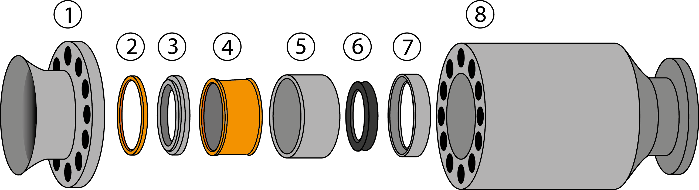
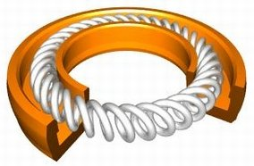
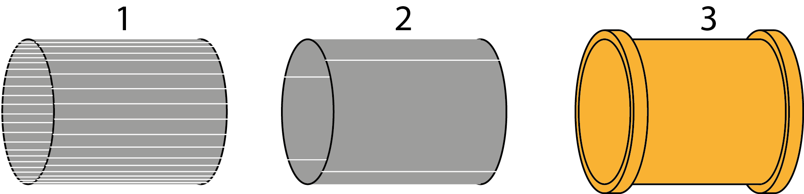

Для работы в ручном режиме необходимо перевести управление пульта оператора в ручной режим. Далее визуально проверяем готовность станций — все лампочки исходного состояния станций должны гореть (при необходимости произвести нужные действия, приводящие оборудование к исходному состоянию).
Если труба по каким-то причинам не проходит гидроиспытания, например, отсутствует высокое давление или появилась течь по телу трубы, необходимо нажать кнопку «Контрольное место 1 (2) – утечка». Если работа происходит в автоматическом режиме, то труба, после прохождения окончательной продувки, автоматически скатится в сортировочный карман. В ручном режиме, после прохождения окончательной продувки, необходимо сначала перевести пульт входа-выхода в ручной режим, нажать кнопку «Вверх» на пульте входа-выхода, опустить погружное место, визуально определить скатывание трубы в сортировочный карман, нажать кнопку «Вниз» пульта входа-выхода.
Устройство передних и задних зажимных головок представлено на рисунках 1 и 2 соответственно. По типоразмеру труб головки отличаются только размерами, устройство же их идентично.

Рисунок 1 - Передняя зажимная головка

Рисунок 2 - Задняя зажимная головка
Передняя зажимная головка имеет следующие элементы: 1) воронка, 2) уплотнительное кольцо, 3) технологическая манжета, 4) тело головки. Задняя зажимная головка состоит из 1) воронки, 2) уплотнительного кольца, 3) уплотнительного фланца, 4) обжимной цанговой манжеты, 5) гильзы, 6) технологической манжеты, 7) форматной гильзы, 8) тела головки.
Технологическая манжета, представленная на рисунке 3, является взаимозаменяемой для сортамента труб (таблица 1); технологическую манжету необходимо устанавливать обжимной пружинкой наружу. Устройство обжимной цанговой манжеты представлено на рисунке 4; она состоит из 1) полосы секторов, соединенных в кольцо для придания эластичности, 2) нескольких стальных полукруглых пластин, вставляемых между полосой секторов и рубашкой для придания жесткости, 3) цанговой рубашки.

Рисунок 3 - Технологическая манжета в разрезе

Рисунок 4 - Обжимная цанговая манжета
| Типоразмер трубы, мм | Типоразмер передней технологической манжеты, мм | Типоразмер задней технологической манжеты, мм |
| 60 | 73 | 60 |
| 73 | 89 | 73 |
| 89 | 114 | 89 |
Износ манжет или уплотнительных колец в зажимных головках можно определить визуально по следующим признакам: падение давления (по приборам наблюдения), сильная течь между воронкой и телом головки, сильная течь вдоль трубы из воронки. Определив неисправность, прессовщику необходимо опорожнить установку от труб, выдвинуть неисправную головку, отключить электропитание гидропресса.
Если неисправна передняя зажимная головка, ее нужно снять, поставить запасную зажимную головку, запустить гидропресс, проверить исправность установленной головки, передать управление гидропресса ответственному лицу и заняться ремонтом головки. Для этого необходимо выкрутить болты, снять воронку головки, заменить изношенную технологическую манжету и/или уплотнительное кольцо, поставить воронку и закрутить болты. Сначала установить 4 болта крест-накрест и протянуть их, избегая неровной установки воронки, затем закрутить остальные болты. Зажимная головка готова к последующему использованию.
Задняя зажимная головка из-за большой массы перебирается, не снимаясь с посадочного места. Порядок действий: снимается датчик наличия трубы, установленный на воронке, выкручиваются болты, начиная от места установки датчика по часовой стрелке. При выкручивании последнего болта необходимо придерживать воронку, чтобы избежать ее падения и причинения себе травмы, вследствие ее большого веса. Затем снимается уплотнительный фланец с кольцом, из гильзы достается цанговая манжета. Если цанговая манжета изношена, нужно осторожно выдвинуть из цанговой рубашки кольцо секторов и пластины примерно до середины, свободной стороной вставить в новую цанговую рубашку, аккуратно снять изношенную рубашку и задвинуть сектора и пластины до конца. Далее вынимается гильза и заменяется технологическая манжета. Устанавливается гильза, исправная цанговая манжета, уплотнительный фланец и воронка. Болты закручиваются по такому же принципу, что и на передней головке: первые 4 крест-накрест, избегая перекоса воронки, потом остальные болты. Установить датчик наличия трубы, проверить что датчик установлен ровно и не замыкается на воронку. После этого запустить гидропресс, визуально проверить отсутствие течи из зажимной головки.
При переналадке на другой типоразмер труб прессовщик должен опорожнить установку, выдвинуть передние и задние зажимные головки, отключить электропитание гидропресса. Далее нужно заменить передние и задние зажимные головки на головки нужного типоразмера, заменить муфтовые кулачки на муфтовом зажиме, развернуть юстировочную планку на нужную высоту. Юстировочная планка способствует лучшей вертикальной центровке трубы на контрольных местах станции испытания.
Снятые головки и муфтовые кулачки необходимо отмыть от остатков уплотнительной смазки, обтереть чистой ветошью и уложить на стойку запасных частей.
Перед началом работы необходимо на панели оператора ввести используемый диаметр трубы, испытательное давление, занести в журнал точное время начала работы, нормативный документ, размер трубы, группу прочности, марку стали, испытательное давление и время испытания.
Необходимо соблюдать технику безопасности при проведении работ, обязательно отключать электропитание гидропресса перед тем, как войти в рабочую зону, работать в защитных очках, перчатках и каске. Задние зажимные головки желательно менять в паре с другим работником участка.
Проведение планового ремонта происходит в два этапа. Прессовщик, работающий в ночную смену, опорожняет установку от труб, промывает неподвижную контропору, станцию промывки, станцию испытания, станцию продувки, убирает остатки уплотнительной смазки из-под станции промывки и станции испытания, промывает канал и пол по всей длине гидропресса, промывает переднюю передаточную тележку, выдвигает подвижную контропору вперед, убирает остатки уплотнительной смазки из-под подвижной опоры и промывает под ней. Прессовщик, работающий в дневную смену, промывает заднюю передаточную тележку, подвижную опору, убирает остатки уплотнительной смазки и металлической стружки из приемного корыта станции промывки, промывает приемное корыто станции промывки и заднюю сторону станции продувки. Также прессовщик чистит приямок, в который сливается эмульсия после цикла испытания и продувки, приямок, в который сливается вода после цикла промывки, и бассейн, предназначенный для циркуляции эмульсии. Далее необходимо протереть чистой ветошью датчики, ролики, стойки однотрубного передатчика, рычаги передачи труб станции измерения, флажки, отмечающие положение подвижной опоры, протереть обзорное стекло кабины оператора, протереть ограждения вокруг гидропресса, двери в гидропресс. Необходимо сделать влажную уборку РМО, протереть пульт оператора.
Перед запуском систем гидропресса необходимо получить разрешение на запуск у сменного мастера, в присутствии службы по ремонту гидравлического оборудования и службы техавтоматики провести пробные гидроиспытания для оценки работоспособности систем гидропресса.
При проведении планового ремонта необходимо соблюдать технику безопасности, перед входом в рабочую зону гидропресса отключать электропитание, пользоваться средствами индивидуальной защиты, соблюдать осторожность при передвижении в рабочей зоне гидропресса.